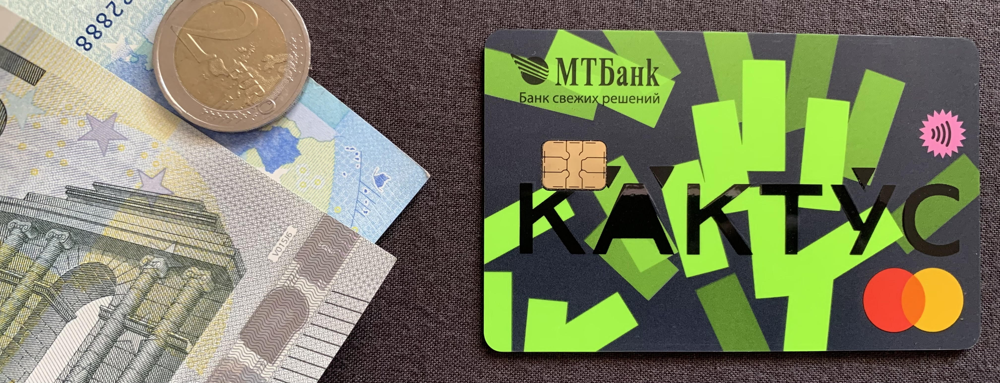

Cactus card (MTBank)
Creation of a new card product with virtual card and bonus system

Tools
- Jira
- Confluence
- Colvir Database
- PL/ SQL
- SAP
- BPML
Skills
- Agile (Scrum)
- Business Analysis
- System Analysis
- Prioritizing
- Requirements Engineering
- PRD & SRS Development
- OKRs KPIs Defining
- Describing API via REST
- Scope Defining
- Meetings Facilitating
Duration
Jan 2022 - Jun 2022
Context
I led the development of the innovative Cactus Card ("КАКТУС"), a card product for individual users that integrated a bonus-points accumulation system, aimed at boosting customer engagement and retention. The project was driven by MTBank’s desire to launch the card before the summer, creating significant time constraints. Adding to the challenge, the initial business requirements were vague, making it difficult to define the project scope early on.
Challenge
MTBank’s tight deadline to launch the card before the summer left little room for delays, and the business requirements were unclear, which made it difficult to determine the project scope and prioritize features. The challenge was to gather and define the requirements while keeping the development timeline on track, all while ensuring the product would meet the business’s and customers’ needs.
Actions I Took
In the face of these challenges, I implemented the following steps to ensure the project was completed on time and successfully launched:
- Customer Requirements Elicitation:
I conducted detailed requirements-gathering sessions through interviews and workshops to clarify vague business needs. These sessions were critical in translating general business goals into actionable product features, providing a clear direction for development. - Analysis and Prioritization:
To tackle the scope challenge, I carefully analyzed all gathered requirements, sorting them by feasibility and impact. I ensured we focused on high-priority features, especially those critical for a successful launch, allowing us to meet deadlines while delivering value. - Stakeholder and Customer Meetings:
I facilitated regular meetings with both MTBank stakeholders and internal teams, ensuring continuous alignment and clear communication. These meetings resolved ambiguities, helped adjust requirements, and maintained momentum despite tight deadlines. - PRD & SRS Documentation:
I created comprehensive Product Requirements Documents (PRD) and System Requirements Specifications (SRS), clearly outlining product functionality and technical specifications. These documents were instrumental in keeping the team focused and preventing scope creep during development. - Cross-Team Coordination:
I acted as the liaison between the technical teams, QA, marketing, and stakeholders, ensuring that all departments worked cohesively towards a common goal. This cross-functional coordination was essential in addressing issues promptly and ensuring smooth progress under tight deadlines. - Risk Management and Scope Refinement:
I proactively identified potential risks, such as misalignment between the vague initial requirements and the project timeline. I worked with stakeholders to refine the scope incrementally and adjusted priorities to mitigate risks without sacrificing the product’s quality.
Solution and Key Features
- Virtual Card Issuance: Integrated the ability to issue virtual cards through Colvir CBS, enabling immediate digital card access, enhancing customer convenience and security.
- Bonus Points System: Developed a robust system for accumulating bonus points on transactions, redeemable for cashback or rewards, fostering customer loyalty.
- Flexible Points Management: Implemented a customizable points management system, allowing users to choose how they wanted to accumulate and redeem points, enhancing user satisfaction.
- Commission Fee System: Designed a dynamic system for automatic commission fee collection based on card options, optimizing revenue.
- Technical Integration: Seamlessly integrated with SAP, Mobile Banking, and Internet Banking, ensuring real-time data synchronization and a smooth customer experience across platforms.
Results
Despite the initial uncertainty and strict deadline, the project was delivered on time, launching just before summer as MTBank had requested. The final product saw a 20% increase in card usage and a 15% boost in customer retention, validating the success of the bonus-points system and virtual card option. MTBank expressed satisfaction with the result, particularly with the seamless customer experience and the flexibility of the product’s features.
Until now, the "Cactus" card remains the most popular among the Bank's clients